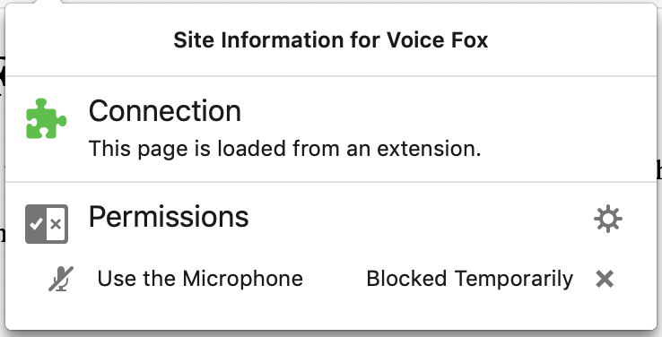
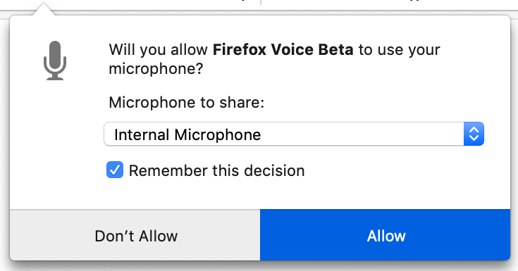

Your microphone appears completely silent. When you gave microphone permission you selected a specific microphone and device. It's likely you selected the wrong device.
To select a new device:
1. Click this icon in the URL bar:
![[Clickable area to the left of the URL, showing 'Extension (Voice Fox)']](../onboarding/images/security-button.png)
2. Remove the permission by clicking on the
✕:

3. Reload this page
4. Grant microphone permission, using the drop-down
select box to review which microphone device to use:
